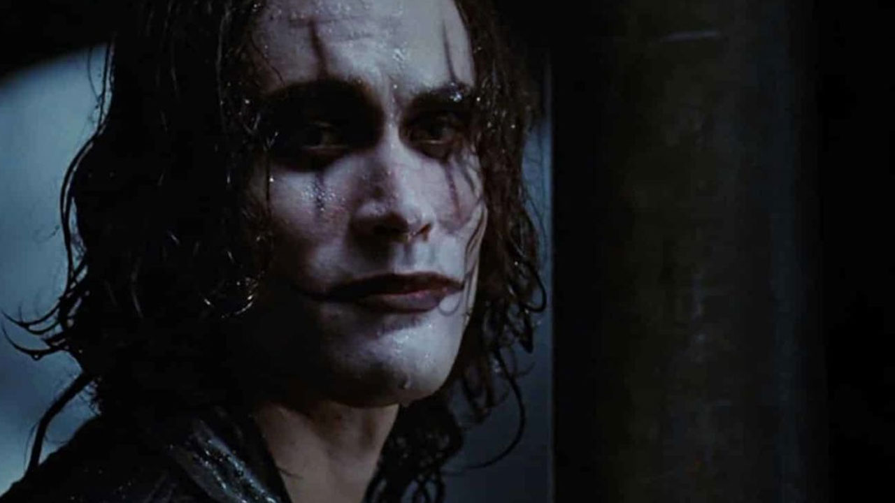

Holy Motors
Questo è sicuramente il più difficile da descrivere. Film d'autore di Leos Carax, che con una regia quasi surrealista nella trama, a tratti grottesca nelle immagini, ci presenta un protagonista che a bordo di una limousine, ripercorre tutte le sue diverse vite.

Hugo Cabret
La storia ruota attorno a Hugo Cabret, un giovane orfano che vive nascosto nella stazione ferroviaria di Parigi negli anni '30. Hugo lavora segretamente per mantenere i meccanismi dell'orologio della stazione, un complesso ereditato da suo padre. La trama prende una svolta quando Hugo incontra Isabelle, una ragazza curiosa, e insieme scoprono un segreto legato al passato di Hugo e al misterioso giocattolaio Georges Méliès. Attraverso la ricerca della verità su Méliès, Hugo scopre il suo ruolo nel mondo del cinema e nel recuperare il suo senso di scopo e appartenenza. Il film esplora temi di scoperta personale, amicizia e passione per l'arte, con una trama intricata e visivamente coinvolgente.

Porco Rosso
La storia è ambientata nell'Europa tra le due guerre mondiali e segue le avventure di un pilota di idrovolanti, Marco Pagot, conosciuto come Porco Rosso. A causa di una misteriosa maledizione, Porco ha sembianze di maiale antropomorfo. Il film si concentra sulle sfide di Porco Rosso mentre difende i cieli del Mar Mediterraneo dai pirati dell'aria e da altre minacce durante il periodo dell'ascesa del fascismo. La trama prende una svolta quando Porco si trova coinvolto in un conflitto con un famoso pilota americano e si innamora di una giovane ingegnere, Fio. La storia mescola avventura, azione e romanticismo, con temi di onore, coraggio e identità personale. Alla fine, Porco Rosso trova la redenzione e il riconoscimento della sua umanità attraverso le sue azioni eroiche e la sua connessione con gli altri personaggi.
Lost in Translation
Lost in Translation segue Bob e Charlotte, due estranei solitari a Tokyo. Nonostante la barriera linguistica e culturale, sviluppano una connessione emotiva mentre esplorano la città insieme. Il film esplora il tema della solitudine e della ricerca di significato, offrendo uno sguardo intimo sulle loro vite e sui loro sentimenti.
Il corvo
Il film segue la storia di Eric Draven, un musicista che viene brutalmente assassinato insieme alla sua fidanzata Shelly durante una rapina la notte prima del loro matrimonio. Un anno dopo, Eric ritorna dalla morte guidato da un corvo, dotato di poteri sovrannaturali. Eric, ora conosciuto come "Il Corvo", vaga per le oscure strade di Detroit in cerca di vendetta contro i criminali responsabili della sua morte e di quella di Shelly. Con l'aiuto di un vecchio amico poliziotto, Eric affronta i suoi nemici uno per uno, mentre cerca di superare il suo dolore e la sua rabbia. Alla fine, Eric riesce a vendicarsi dei suoi assassini, ma il suo destino rimane legato a quello del corvo, che lo guida oltre la morte verso la pace.